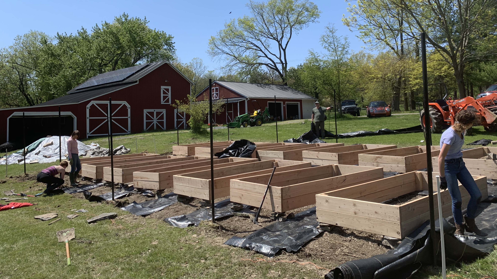
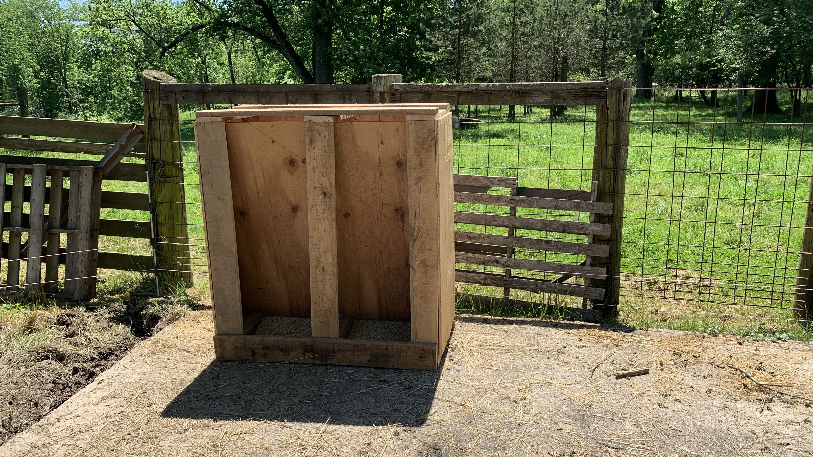
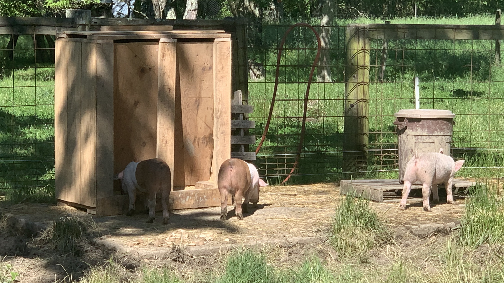
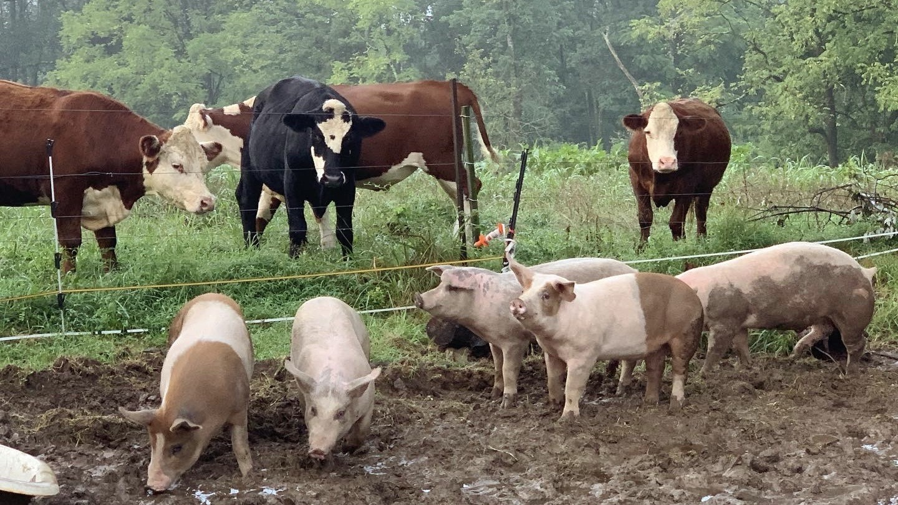

Handiwork
During the Covid-19 Pandemic, I had the opportunity to live on a farm and used my free time to become a better engineer. Featured in this section are some of the projects I completed on the farm. These include building a garden with an irrigation system, a pig feeder, and a squat rack. Both the pig feeder and squat rack were built with scrap wood that I had found around the farm from previous owners. Other skills aquired include fixing electric fences and working with high tensile wire.

Finished Garden

Before Construction

Leveling Raised Beds

Planting Flowers

Edging and Tilling The Dirt in Preparation of the 14 Raised Beds

Squat Rack and Bench From Scrap Wood


